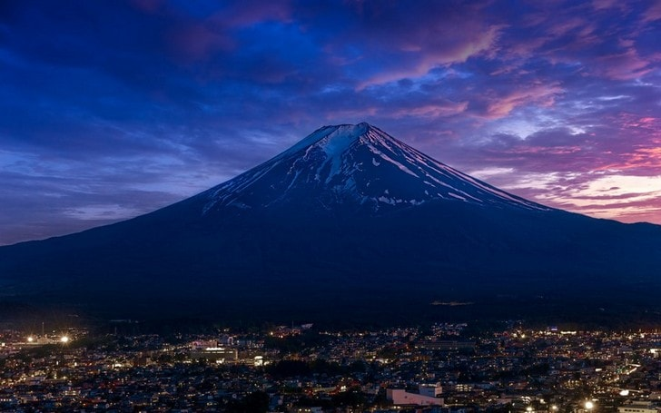
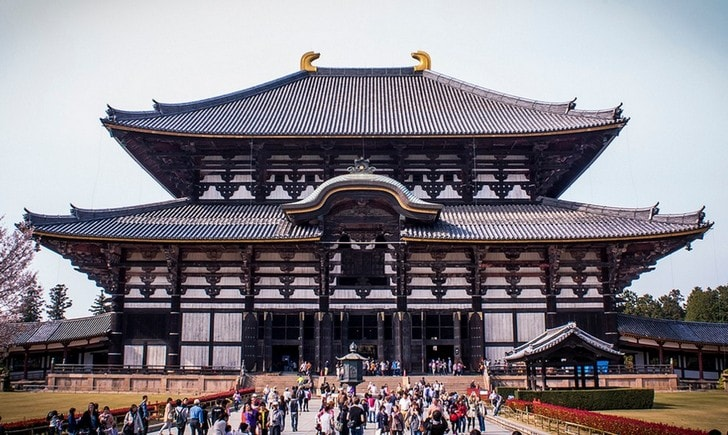
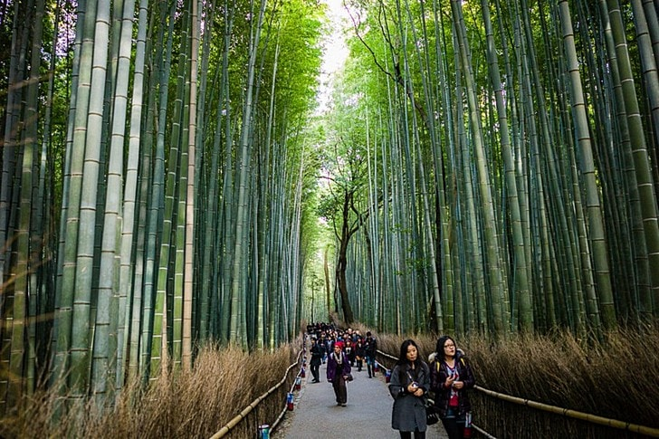
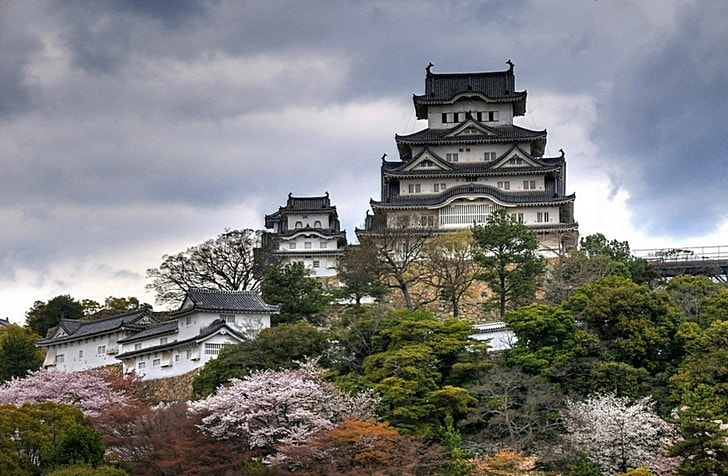
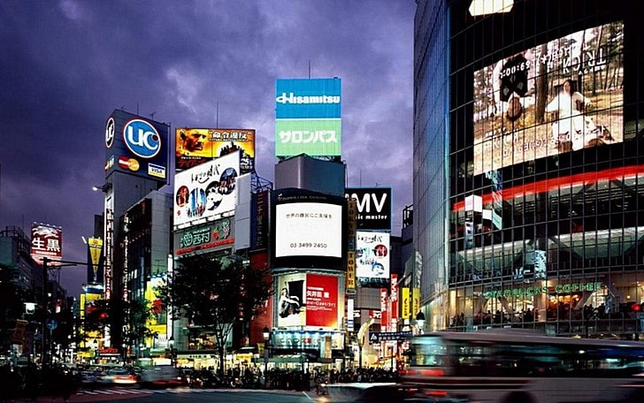
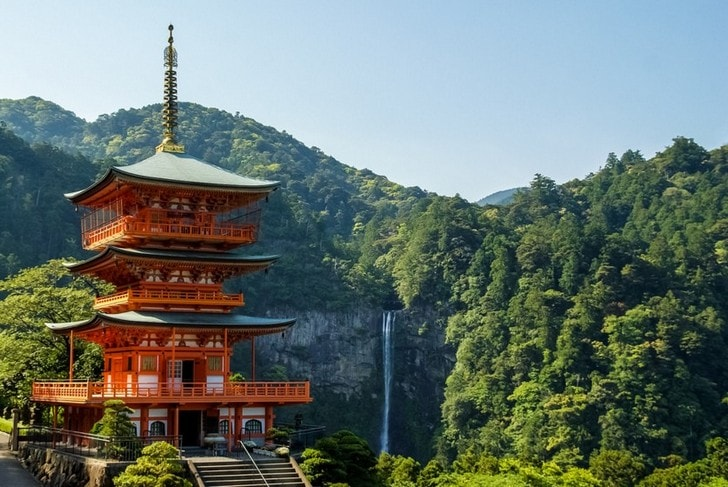

Фудзияма – визитная карточка Японии. Ее высота 3776 метров. Для японцев это место священное, а для туристов – невероятно привлекательное. У вулкана удивительно симметричный конус. Самый красивый вид на него зимой или ранней весной. Возле Фудзиямы находится 5 вулканических озер. Восхождения на гору проводят летом. Покорять Фудзияму помогают гиды и развитая инфраструктура.
Это самое священное место в Японии. Каждый год сюда приезжает три миллиона посетителей. Храм Тодай-дзи уменьшился в размерах впоследствии пожаров, но до сих пор является самым большим деревянным сооружением в мире. Построили его в 745 году. В середине храма 15-ти метровая статуя Будды. Для ее изготовления потратили почти все запасы бронзы. На территории храма также живут любимые туристами олени.
Рощу создал монах Мусо Сосэки. Она находится в районе Киото. Все в парке имеет глубокий подтекст. Не зря говорят, что тут можно понять смысл жизни. Через Арасияму проходят дорожки. Обойти парк можно за 15 минут, но гулять там хочется часами. Бамбуковые стебли издают особые звуки. Это невероятная лесная музыка. Высота деревьев достигает 40 метров.
Химэдзи называют замком Белой Цапли. Его стены белоснежные, а линии и черты грациозные, как у птицы. За время своего существования замок не страдал от пожаров или вражеских набегов. А если бы кто и попытался захватить замок, то запутался бы в лабиринтах садов и комнат. Весь комплекс – это 83 сооружения. Вокруг них цветет сакура, что делает замок еще прекраснее. Не удивительно, что его неоднократно снимали в фильмах.
Это один из 23 специальных районов Токио. Когда-то он был деревней, потом небольшим городком. Теперь это часть столицы и центр ночной жизни, развлечений, моды и шопинга. Также тут расположены одни из самых высоких небоскребов города, офисы Майкрософт и Кока-Кола. Центром района считают памятник Хатико. Кроме бутиков и развлекательных центров тут есть музеи и храмы.
Это одно из святилищ Кумано. Расположено оно неподалеку от термального источника Кацуура. К храму ведут многочисленные дорожки. Они окружены огромными деревьями и тянутся на протяжении 600 метров. Одна из главных красот Кумано Нати Тайся – самый высокий водопад в Японии. Его высота 113 метров и для японцев он имеет религиозное значение. Его мощь и красота удивляет даже бывалых путешественников.
 Наверх